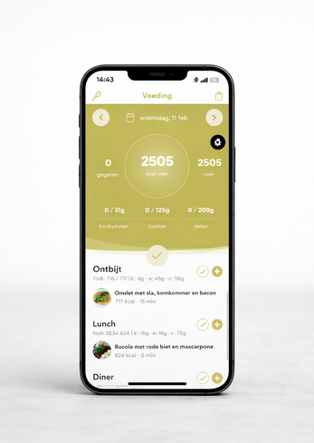

Persoonlijke voedingscoaching via onze app: kcal-doel, macroverdeling en wekelijkse check-ins met je coach. Geen strenge diëten, wel een aanpak die je leven in past. Onderdeel van elk SGPT- en PT-pakket — of los af te nemen.
We werken nuchter en praktisch. Geen vingervermanend dieetadvies, wel concrete handvatten die in jouw week passen.
De meest gehoorde drempels — en hoe we ze concreet wegnemen bij Fit Up Leiderdorp.
Vier stappen, geen verkooppraatje. We meten, sturen bij en kijken eerlijk of dit traject bij jou past.
Onze voedingscoaching is volledig digitaal via app — maar de gym, je coach en de metingen vind je op locatie aan de Weversbaan 9 in Leiderdorp. Combineren werkt het beste.

Plan een gratis intake — vrijblijvend, eerlijk advies. Of stuur direct een appje, dan praten we even kort door.